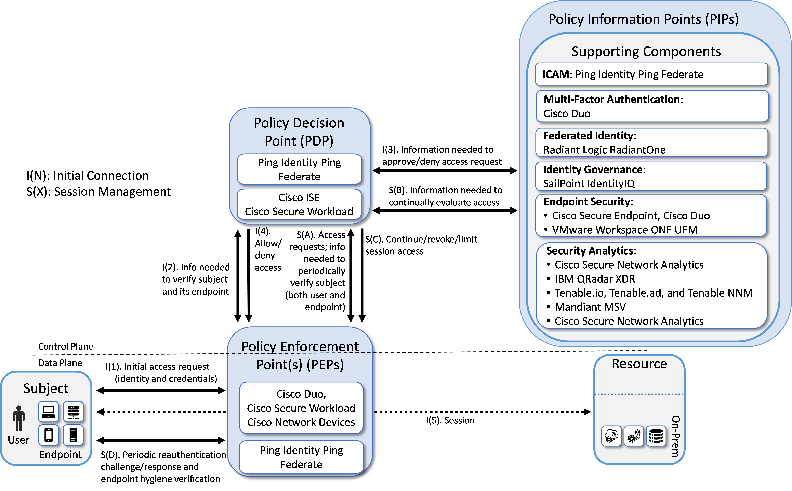
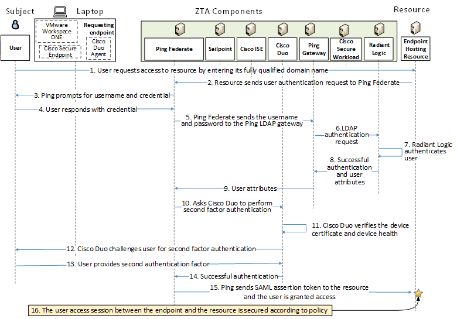
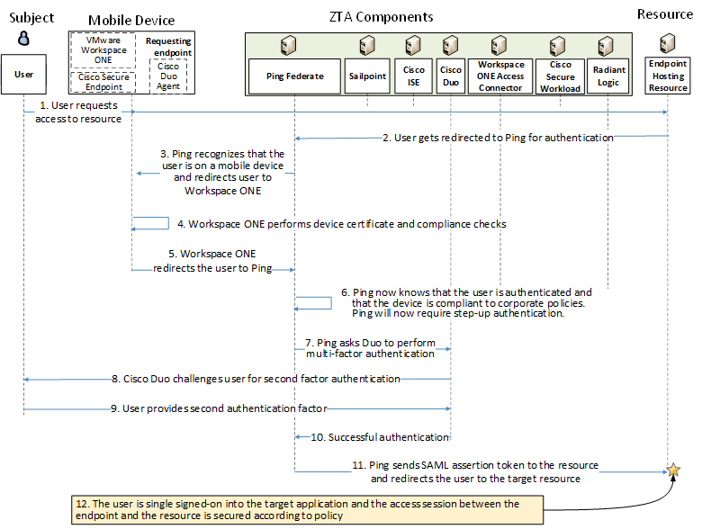
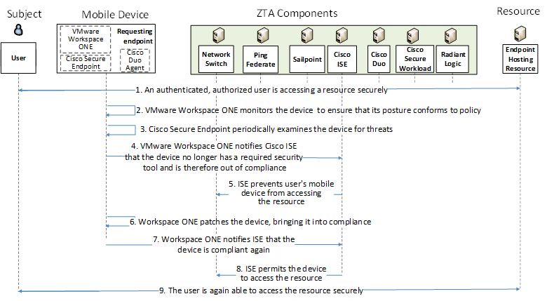
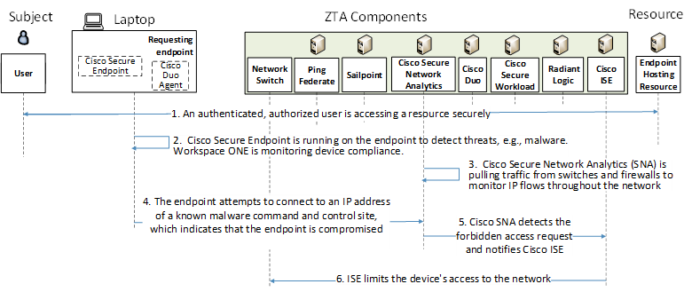
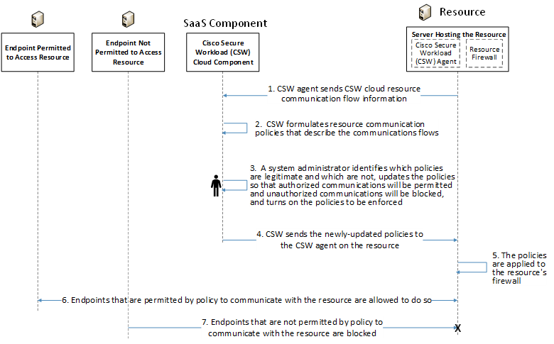
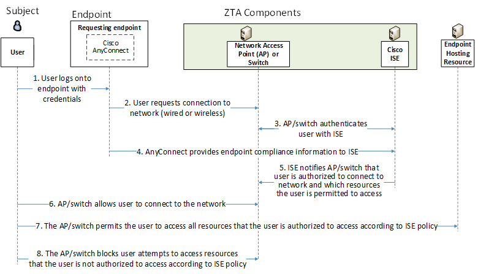

Enterprise 2 Build 3 (E2B3) — Microsegmentation - Cisco ISE, Cisco Secure Workload, and Ping Identity Ping Federate as PEs#
Note
This page is supplementary material for the NIST SP 1800-35 publication.
Technologies#
E2B3 uses products from Cisco Systems, IBM, Mandiant, Palo Alto Networks, Ping Identity, Radiant Logic, SailPoint, Tenable, and VMware. Certificates from DigiCert are also used. For more information on these collaborators and the products and technologies that they contributed to this project overall, see Collaborators and Their Contributions.
E2B3 components consist of PingFederate, which is connected to the Ping Identity SaaS offering of PingOne, Radiant Logic RadiantOne Intelligent Identity Data Platform, SailPoint IdentityIQ, Cisco ISE, Cisco Secure Workload, Cisco Duo, Cisco Secure Endpoint, Cisco Secure Network Analytics, Cisco network devices, Palo Alto Networks Next Generation Firewall (NGFW), IBM Security QRadar XDR, Tenable.io, Tenable.ad, Tenable Nessus Network Monitor (NNM), Mandiant Security Validation (MSV), VMware Workspace ONE UEM and Access, and DigiCert CertCentral.
Table 1 lists all of the technologies used in E2B3. It lists the products used to instantiate each ZTA component and the security function that each component provides.
Table 1 - E2B3 Products and Technologies
Component |
Product |
Function |
|---|---|---|
PE |
Ping Identity PingFederate, Cisco ISE, and Cisco Secure Workload |
Decides whether to grant, deny, or revoke access to a resource based on enterprise policy, information from supporting components, and a trust algorithm. |
PA |
Ping Identity PingFederate, Cisco ISE, and Cisco Secure Workload |
Executes the PE’s policy decision by sending commands to a PEP that establishes and shuts down the communication path between subject and resource. |
PEP |
Ping Identity PingFederate, Cisco Duo, Cisco Network Devices, and Cisco Secure Workload |
Guards the trust zone that hosts one or more enterprise resources; establishes, monitors, and terminates the connection between subject and resource as directed by the PA; forwards requests to and receives commands from the PA. |
ICAM - Identity Management |
Ping Identity PingFederate |
Creates and manages enterprise user and device accounts, identity records, role information, and access attributes that form the basis of access decisions within an organization to ensure the correct subjects have the appropriate access to the correct resources at the appropriate time. |
ICAM - Access & Credential Management |
Ping Identity PingFederate |
Manages access to resources by performing user and device authentication (e.g., SSO and MFA) and using identity, role, and access attributes to determine which access requests are authorized. |
ICAM - Federated Identity |
Radiant Logic RadiantOne Intelligent Identity Data Platform |
Aggregates and correlates all attributes relating to an identity or object that is being authorized by a ZTA. It enables users of one domain to securely access data or systems of another domain seamlessly, and without the need for completely redundant user administration. Federated identity encompasses the traditional ICAM data, supports identities that may be part of a larger federated ICAM community, and may include non-enterprise employees. |
ICAM - Identity Governance |
SailPoint IdentityIQ |
Provides policy-based, centralized, automated processes to manage user identity and access control functions (e.g., ensuring segregation of duties, role management, logging, access reviews, analytics, reporting) to ensure compliance with requirements and regulations. |
ICAM - MFA |
Cisco Duo |
Supports MFA of a user identity by requiring the user to provide not only something they know (e.g., a password), but also something they have (e.g., a token). |
Endpoint Security - UEM/MDM |
VMware Workspace ONE UEM |
Manages and secures enterprise desktop computers, laptops, and/or mobile devices in accordance with enterprise policy to protect applications and data; ensure device compliance; mitigate and remediate vulnerabilities and threats; monitor for suspicious activity to prevent and detect intrusions; prevent, detect, and disable malware and other malicious or unauthorized traffic; repair infected files when possible; provide alerts and recommend remediation actions; and encrypt data. Pushes enterprise applications and updates to devices, enables users to download enterprise applications that they are authorized to access, remotely deletes all applications and data from devices if needed, tracks user activity on devices, and detects and addresses security issues on the device. |
Endpoint Security - EPP |
Cisco Secure Endpoint |
Detects and stops threats to endpoints through an integrated suite of endpoint protection technologies including antivirus, data encryption, intrusion prevention, EDR, and DLP. May include mechanisms that are designed to protect applications and data; ensure device compliance with policies regarding hardware, firmware, software, and configuration; monitor endpoints for vulnerabilities, suspicious activity, intrusion, infection, and malware; block unauthorized traffic; disable malware and repair infections; manage and administer software and updates; monitor behavior and critical data; and enable endpoints to be tracked, troubleshooted, and wiped, if necessary. |
Endpoint Security - Endpoint Compliance |
Cisco Duo |
Performs device health checks by validating specific tools or services within the endpoint including antivirus, data encryption, intrusion prevention, EPP, and firewall. If the device does not pass the health check, Duo fails second-factor authentication and denies user access. |
Security Analytics - SIEM |
IBM Security QRadar XDR |
Collects and consolidates security information and security event data from many sources; correlates and analyzes the data to help detect anomalies and recognize potential threats and vulnerabilities; and logs the data to adhere to data compliance requirements. |
Security Analytics - Endpoint Monitoring |
Tenable.io |
Discovers all IP-connected endpoints and performs continuous collection, examination, and analysis of software versions, configurations, and other information regarding hosts (devices or VMs) that are connected to the network. |
Security Analytics - Vulnerability Scanning and Assessment |
Tenable.io and Tenable.ad |
Scans and assesses the enterprise infrastructure and resources for security risks, identifies vulnerabilities and misconfigurations, and provides remediation guidance regarding investigating and prioritizing responses to incidents. |
Security Analytics - Traffic Inspection |
Tenable NNM |
Intercepts, examines, and records relevant traffic transmitted on the network. |
Security Analytics - Network Discovery |
Tenable NNM |
Discovers, classifies, and assesses the risk posed by devices and users on the network. |
Security Analytics - Network Monitoring |
Cisco Secure Network Analytics |
Aggregates and analyzes network telemetry information generated by network devices to provide network visibility on-premises and detect and respond to threats. Threat information can be passed to PDP, which can then perform additional actions such as blocking or quarantining a device. |
Security Analytics - Security Validation |
Mandiant Security Validation |
Provides visibility and evidence on the status of the security controls’ effectiveness in the ZTA. Enables security capabilities of the enterprise to be monitored and verified by continuously validating and measuring the cybersecurity controls; also used to automate the demonstrations that were performed to showcase ZTA capabilities. Deployed throughout the project’s laboratory environment to enable monitoring and verification of various security aspects of the builds. VMs that are intended to operate as actors are deployed on each of the subnetworks in each of the enterprises. These actors can be used to initiate various actions for the purpose of verifying that security controls are working to support the objectives of zero trust. |
General - Remote Connectivity |
Palo Alto Networks NGFW, Palo Alto Networks Panorama |
Enables authorized remote users to securely access the inside of the enterprise. (Once inside, the ZTA manages the users’ access to resources.) |
General - Certificate Management |
DigiCert CertCentral TLS Manager |
Provides automated capabilities to issue, install, inspect, revoke, renew, and otherwise manage TLS certificates. |
General - Cloud IaaS |
None |
Provides computing resources, complemented by storage and networking capabilities, hosted by a cloud service provider, offered to customers on demand, and exposed through a GUI and an API. |
General - Cloud SaaS |
Cisco Secure Endpoint, Cisco Duo, Cisco Secure Workload, DigiCert CertCentral, Ping Identity PingOne (PingFederate service), Tenable.io, and VMware Workspace ONE |
Cloud-based software delivered for use by the enterprise. |
General - Application |
GitLab |
Example enterprise resource to be protected. (In this build, GitLab is integrated with Ping Identity and IBM Security QRadar XDR pulls logs from GitLab.) |
General - Enterprise-Managed Device |
Windows client, macOS client, and mobile devices (iOS and Android) |
Example endpoints to be protected. All enterprise-managed devices are running a VMware Workspace ONE UEM agent and also have the Cisco Duo installed. |
General - BYOD |
Windows client, macOS client, and mobile devices (iOS and Android) |
Example endpoints to be protected. |
Build Architecture#
In this section we present the logical architecture of E2B3 relative to how it instantiates the reference architecture depicted in Architecture - Figure 1. We also describe E2B3’s physical architecture and present message flow diagrams for some of its processes.
Logical Architecture#
Figure 1 depicts the logical architecture of E2B3. The figure uses numbered arrows to depict the general flow of messages needed for a subject to request access to a resource and have that access request evaluated based on subject identity (both requesting user and requesting endpoint identity), user authorizations, and requesting endpoint health. It also depicts the flow of messages supporting periodic reauthentication of the requesting user and the requesting endpoint and periodic verification of requesting endpoint health, all of which must be performed to continually reevaluate access. The labeled steps in Figure 1 have the same meanings as they do in Architecture - Figure 1 and Architecture - Figure 2. However, Figure 1 includes the specific products that instantiate the architecture of E2B3. Figure 1 also does not depict any of the resource management steps found in Architecture - Figure 1 and Architecture - Figure 2 because the ZTA technologies deployed in E2B3 do not support the ability to perform authentication and reauthentication of the resource or periodic verification of resource health.
E2B3 was designed to have three PDPs: Cisco ISE, Cisco Secure Workload, and Ping Identity PingFederate. Ping Identity PingFederate also serves as the identity, access, and credential manager. PingFederate, Cisco Duo, Cisco network devices, and Cisco Secure Workload also serve as PEPs. Radiant Logic acts as a PIP for the PDP as it responds to inquiries and provides user identity and authentication information on demand in order for Ping Identity PingFederate to make near-real-time access decisions. VMware Workspace One UEM provides endpoint management, and Cisco Secure Endpoint provides endpoint protection. Cisco Duo provides second-factor user authentication. Note that both multifactor authentication and directory services are also available through Ping, but for purposes of this collaborative build, Ping is demonstrating standards-based interoperability by integrating with Cisco Duo for MFA and Radiant Logic RadiantOne for federated identity services. A more detailed depiction of the messages that flow among components to support a user access request can be found in E2B3 Message Flows for Resource Access Requests, Non-Compliant Endpoints, Forbidden Access Requests, and Policy Discovery.
Figure 1 - Logical Architecture of E2B3

ICAM Information Architecture#
How ICAM information is provisioned, distributed, updated, shared, correlated, governed, and used among ZTA components is fundamental to the operation of the ZTA. The ICAM information architecture ensures that when a subject requests access to a resource, the aggregated set of identity information and attributes necessary to identify, authenticate, and authorize the subject is available to be used as a basis on which to make the access decision.
In E2B3, Ping Identity, Radiant Logic, and SailPoint integrate with each other as well as with other components of the ZTA to support the ICAM information architecture. The ways that these components work together to correlate identity information and to support actions such as users joining, changing roles, and leaving the enterprise are the same in E2B3 as they are in E2B1. These interactions are described in E2B1 - ICAM Information Architecture.
Physical Architecture#
Enterprise 2 describes the physical architecture of the E2B3 network.
E2B3 Message Flows for Resource Access Requests, Non-Compliant Endpoints, Forbidden Access Requests, and Policy Discovery#
This section depicts five message flow scenarios that demonstrate various build capabilities.
Authentication Message Flow for Non-Mobile Endpoints (PingFederate, Cisco Duo, Cisco Secure Endpoint, Cisco ISE, Cisco Secure Workload, and Radiant Logic)#
Figure 2 depicts the high-level message flow supporting the use case in which a subject who has an enterprise ID, is using a laptop (i.e., a non-mobile) endpoint, and is authorized to access an enterprise resource, requests and receives access to that resource. In the case depicted here, access to the resource is authenticated and authorized by:
PingFederate, which acts as a PDP and identity provider;
Cisco ISE, which also acts as a PDP;
Cisco Duo, which consists of an agent on the endpoint and a cloud component that work together to perform second-factor user authentication and also to gather device health information to ensure device compliance;
Cisco Secure Endpoint, which runs on the endpoint and performs continuous monitoring to detect threats;
Radiant Logic, which performs user authentication at the request of PingFederate; and
Cisco Secure Workload (CSW), which provides resource protection by applying policies directly to the resource.
These policies allow and deny communications to and from the resource by configuring the firewall on the resource.
The message flow depicted in Figure 2 shows only the messages that are sent in response to the access request. However, the authentication and access process also relies on the following additional background communications that occur among components on an ongoing basis:
The Cisco Duo endpoint agent periodically syncs with the Cisco Duo cloud component to reauthenticate the requesting endpoint device using a unique certificate that has been provisioned specifically for that device and sends the cloud component information about device health (e.g., firewall running, anti-malware software, iOS version).
Cisco Duo is integrated with PingFederate. During the authentication flow, Cisco Duo sends PingFederate assurance that, based on the device health information it has collected, the device is compliant with configured policy.
Cisco Secure Endpoint threat detection is continuously running on the endpoint and also acts as a PEP. If Secure Endpoint detects a threat, it notifies both Cisco Duo and Cisco ISE, and it can perform an automated response. For example, it can isolate the infected endpoint and perform a forensic snapshot of it.
Cisco ISE acts as a PDP. It receives notifications from Cisco Secure Endpoint and relies on telemetry information that Secure Endpoint provides to make its access decisions. If Cisco Secure Endpoint detects a threat in the device posture and notifies ISE, ISE can prevent the endpoint from sending packets and also shut down the port that the user is trying to reach.
Figure 2 depicts the message flow for the user’s request to access the resource from a non-mobile device.
Figure 2 - Use Case E2B3 - User Authentication and Access Enforcement When the Requesting Device Is Non-Mobile

The message flow depicted in Figure 2 consists of the following steps:
A user on a non-mobile device requests to access a resource by typing the resource’s URL into a browser.
Because Cisco CSW policy allows this communication, resource firewall rules have been configured to allow the resource to receive the access request. The resource receives the access request and sends a user authentication request to PingFederate.
PingFederate prompts for username and password.
The user responds with username and password.
PingFederate sends the user’s credentials to the LDAP gateway.
The LDAP gateway sends an LDAP authentication request to Radiant Logic.
Radiant Logic authenticates the user.
Radiant Logic replies to the LDAP gateway with indication of a successful user authentication and the user’s attributes.
The LDAP gateway responds to PingFederate with the user’s attributes.
PingFederate requests Cisco Duo to perform second-factor user authentication.
Cisco Duo verifies that the requesting device has the unique certificate that it was provisioned and verifies that device health is according to policy (e.g., firewall running, anti-malware software, iOS version).
Cisco Duo challenges the user to provide the second authentication factor.
The user responds with the second authentication factor.
Cisco Duo responds to PingFederate, indicating that the user authenticated successfully.
PingFederate sends a SAML assertion token to the resource. The resource accepts the assertion and grants the access request.
User traffic to and from the resource is secured according to policy (e.g., using TLS or HTTPS).
Note that the message flow described above is the same regardless of whether the employee is located on-premises at headquarters, on-premises at a branch office, or off-premises at home or elsewhere. It is also the same regardless of whether the resource is located on-premises or in the cloud.
Authentication Message Flow for Mobile Endpoints (PingFederate, VMware Workspace ONE, Cisco Duo, Cisco Secure Endpoint, Cisco ISE, Cisco Secure Workload, and Radiant Logic)#
Figure 3 depicts the high-level message flow supporting the use case in which a subject who has an enterprise ID, is using a mobile device, and is authorized to access an enterprise resource, requests and receives access to that resource. In the case depicted here, access to the resource is protected by PingFederate, which acts as a PDP and is the centralized identity provider in the identity federation. In addition to performing its own user authentication, PingFederate is integrated with VMware Workspace ONE and delegates localized authentication of the mobile device and user to Workspace ONE. Workspace ONE manages the mobile endpoint, ensures that its certificate is valid, gathers device health information to ensure device compliance, performs remediation if possible, and then authenticates the user and device. After successfully authenticating the user and the device, Workspace ONE notifies PingFederate, which, as the centralized identity provider, determines what additional authentication must be performed, if any. In the use case depicted here, PingFederate oversees multifactor authentication of the user by requesting username and credentials, delegating initial authentication to Radiant Logic, and then asking Cisco Duo to perform second-factor user authentication. In addition, Cisco Secure Endpoint performs continuous endpoint threat detection, Cisco Secure Workload applies policies directly to the resource to protect it, and Cisco ISE acts as a PDP to enforce policy beyond user and device authentication.
The message flow depicted in Figure 3 shows only the messages that are sent in response to the access request. However, the authentication and access process also rely on the following additional background communications that occur among components on an ongoing basis:
VMware Workspace ONE is integrated with PingFederate and Cisco ISE. Workspace ONE periodically sends Cisco ISE assurance that, based on device health information it is collecting, the mobile device is managed, has the unique certificate that was provisioned specifically for that device, and is compliant with configured policy (e.g., firewall running, anti-malware software enabled, iOS version correct). Workspace ONE may also provide this information to Ping as part of the authentication flow.
The Cisco Duo endpoint agent periodically syncs with the Cisco Duo cloud component to reauthenticate the requesting endpoint device using a unique certificate that has been provisioned specifically for that device, and sends the cloud component information about device health (e.g., firewall running, anti-malware software, iOS version).
Cisco Duo is integrated with PingFederate. During the authentication flow, Cisco Duo sends PingFederate assurance that, based on the device health information it has collected, the device is compliant with configured policy.
Cisco Secure Endpoint threat detection is continuously running on the endpoint and also acts as a PEP. If Secure Endpoint detects a threat, it notifies Cisco ISE, which can perform an automated response. For example, it can isolate the infected endpoint and perform a forensic snapshot of it.
Cisco ISE acts as a PDP. It receives notifications from Cisco Secure Endpoint and VMware Workspace ONE and relies on telemetry information that they provide to it to make its access decisions. If Cisco Secure Endpoint detects a threat in the device posture and notifies ISE, ISE can shut down the port that the user is trying to reach. If VMware Workspace ONE determines that the device is out of compliance, is no longer managed, or does not have a valid certificate, and notifies ISE, ISE can shut down the target port until the device’s security posture can be remediated.
Figure 3 depicts the message flow for the user’s request to access the resource from a mobile device.
Figure 3 - Use Case E2B3 - User Authentication and Access Enforcement When the Requesting Device Is Mobile

The message flow depicted in Figure 3 consists of the following steps:
A user on a mobile device requests to access a resource by typing the resource’s URL into a browser.
The user gets redirected to PingFederate for authentication.
PingFederate recognizes that the user is on a mobile device and redirects the user to VMware Workspace ONE.
VMware Workspace ONE performs a device certificate check and a device compliance check.
With a successful user and device authentication, VMware Workspace ONE redirects the now-authenticated user to PingFederate.
PingFederate now knows that the user is authenticated and that the device is compliant to corporate policies. As required by the configured access policies, PingFederate will require step-up authentication using Duo for MFA.
Ping requests Duo to perform step-up authentication.
Cisco Duo challenges the user to provide the second authentication factor.
The user responds with the second authentication factor.
Cisco Duo contacts PingFederate, indicating that the user authenticated successfully.
PingFederate generates the assertion to the target resource and redirects the user there.
The user is single signed-on into the target resource.
Note that the message flow described above is the same regardless of whether the employee is located on-premises at headquarters, on-premises at a branch office, or off-premises at home or elsewhere. It is also the same regardless of whether the resource is located on-premises or in the cloud.
Message Flow When an Endpoint is Determined to Be Non-Compliant (PingFederate, VMware Workspace ONE, Cisco Secure Endpoint, and Cisco ISE)#
Figure 4 depicts the high-level message flow supporting the use case in which a subject who has already been granted access to an enterprise resource is using a device that goes out of compliance because it no longer has a required security tool running. In the case depicted here, Cisco ISE serves as a PDP; VMware Workspace ONE UEM is running on the endpoint and monitoring device posture.
The message flow depicted in Figure 4 is assumed to take place after the user has been authenticated, authorized, and granted access to the resource.
Figure 4 - Use Case E2B3 - Message Flow When an Endpoint is Determined to Be Non-Compliant

The message flow depicted in Figure 4 consists of the following steps:
The user, who has already been authenticated and is using a compliant device, is securely accessing an enterprise resource that they are authorized to access.
VMware Workspace ONE periodically reauthenticates the requesting endpoint device using a unique certificate that has been provisioned specifically for that device and also monitors the device posture (e.g., firewall running, anti-malware software, OS version) to ensure that it is compliant with configured policy.
Cisco Secure Endpoint threat detection is running on the endpoint and also acts as a PEP. If Secure Endpoint detects a threat, it notifies both Cisco Duo and Cisco ISE, and it can perform an automated response. For example, it can isolate the infected endpoint and perform a forensic snapshot of it. In this use case, Secure Endpoint does not detect any threats on the device.
Workspace ONE detects that the firewall (or other required security tool) is no longer running on the device and informs Cisco ISE that the device is not compliant with policy.
ISE updates its PEPs (i.e., routers, switches, firewalls) to prevent the device from reaching the resource.
Meanwhile, Workspace ONE works to patch the endpoint and eventually brings it into compliance.
When the update is complete, Workspace ONE notifies ISE that the device is compliant again.
ISE permits the device to access the resource again.
The device is able to access the resource again.
Message Flow When an Endpoint is Compliant but a User Access Request Is Not Permitted by Policy (PingFederate and Cisco ISE)#
Figure 5 depicts the high-level message flow supporting the use case in which a subject who has already been granted access to an enterprise resource tries to access an IP address that is known to be the command-and-control site for malware, thereby indicating that the subject endpoint is compromised. In the case depicted here, Cisco ISE serves as a PDP, Cisco Secure Endpoint examines the endpoint for threats, and Cisco Secure Network Analytics (SNA) monitors IP flows throughout the network to detect threats such as requests to connect to forbidden IP addresses.
The message flow depicted in Figure 5 is assumed to take place after the user has been authenticated, authorized, and granted access to the resource.
Figure 5 - Use Case E2B3 - Message Flow When a User’s Endpoint is Compliant but the User Requests Access to a Domain that Is Not Permitted by Policy

The message flow depicted in Figure 5 consists of the following steps:
The user, who has already been authenticated and is using a compliant device, is securely accessing an enterprise resource that they are authorized to access.
Cisco Secure Endpoint, which is running on the user’s device, is monitoring the device for threats. VMware Workspace ONE UEM is running on the endpoint to ensure device compliance.
Cisco SNA is pulling traffic from switches and firewalls throughout the network to monitor IP flows.
The user’s endpoint attempts to access the IP address of a known malware command-and-control site. This attempt to access a prohibited domain indicates that the endpoint has been compromised.
Cisco SNA detects the request to access the prohibited IP address and notifies Cisco ISE.
ISE limits the device’s access to the network.
Message Flow When Cisco Secure Workload (CSW) Is Used to Automatically Discover Policies#
Figure 6 depicts the high-level message flow supporting the use case in which Cisco Secure Workload (CSW) is used to discover resource access policies. CSW includes both a cloud-based SaaS component and an agent that is deployed on the on-premises resource. The CSW agent on the resource communicates with the cloud-based CSW component on an ongoing basis to inform the cloud-based component of all communications flows that the resource is engaged in and to apply policies created by CSW to the resource.
Figure 6 - Use Case E2B3 - Cisco Secure Workload Policy Discovery

The message flow depicted in Figure 6 consists of the following steps:
The CSW agent informs the CSW cloud component about the communications flows that the resource is engaged in.
Based on these communications flows, the CSW cloud component discovers what endpoints the resource is communicating with and in what manner, and it formulates these communications flows into policies.
A system administrator examines these policies, determines which ones describe legitimate resource communications and which ones do not, and updates them to ensure that only authorized access will be permitted and all unauthorized access will be blocked. Once the system administrator is satisfied that the policies are correct, the policies are turned on to be enforced. (Note that when CSW is being used, all communications between the resource and the CSW cloud component are automatically considered to be legitimate and will be permitted, even if a system administrator tries to mark them as unauthorized. The CSW agent on the resource must be able to communicate with the CSW cloud in order to discover flows and provide policies to the CSW agent.)
The CSW cloud component sends the newly formulated policies to the CSW agent on the resource.
The policies are applied to the resource’s firewall.
All communications to and from the resource that are permitted by the resource’s newly configured firewall policies will be allowed.
All communications to and from the resource that are not permitted by the resource’s newly configured firewall policies will be blocked.
Message Flow in which Cisco ISE Manages User Access to the Network and Resources#
Figure 7 depicts the high-level message flow supporting the use case in which Cisco ISE manages user connection to the network and access to resources. The user’s endpoint has Cisco AnyConnect running on it for purposes of validating endpoint compliance.
Figure 7 - Use Case E2B3 - Cisco ISE Manages Access to the Network and Resources

The message flow depicted in Figure 7 consists of the following steps:
The user logs into the endpoint using their credentials.
Cisco Anyconnect connects to the network, which may be either a wired or wireless connection. This request is received at the AP or switch.
The AP or switch interacts with Cisco ISE to ensure that the user is authenticated.
The Cisco AnyConnect ISE posture module, which is running on the user’s endpoint, provides information to ISE to enable it to validate that the endpoint is compliant.
ISE notifies the AP/switch that the user is authorized to connect to the network and also indicates which resources the user is permitted to access.
The AP/switch allows the user to connect to the network.
All subsequent attempts to access resources that the user is authorized to access are permitted by the AP/switch.
All subsequent attempts to access resources that the user is not authorized to access are blocked by the AP/switch.